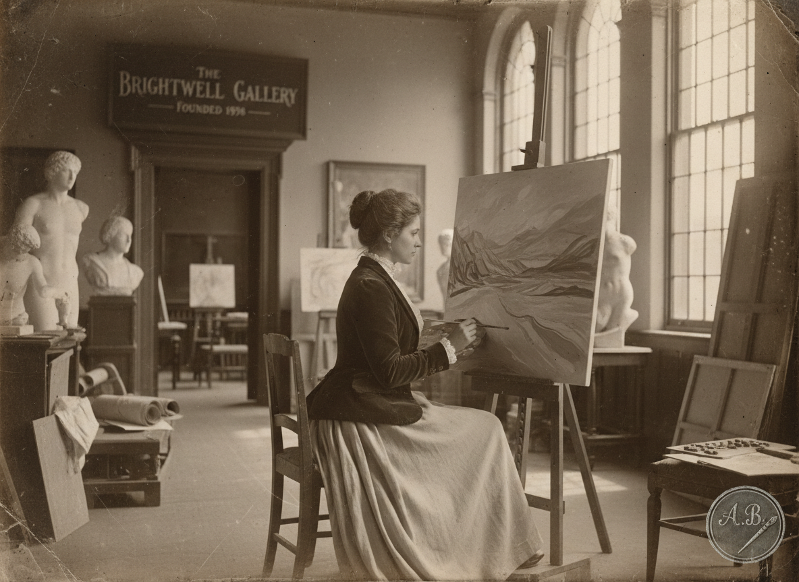
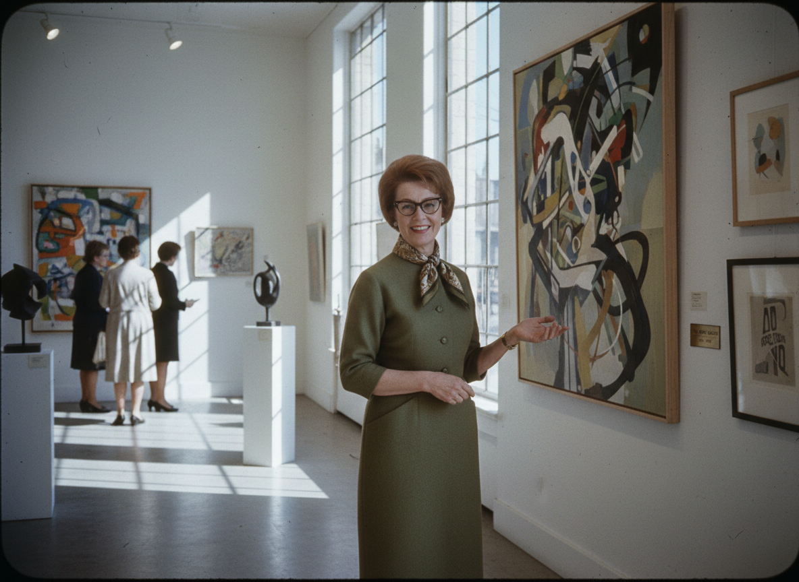

Joan Indigo started it all as a pioneer female painter in 1898. She frequented an art gallery as a hobby painter and eventually purchased the space when the previous owner had passed. Joan would later on use the gallery as a teaching space for the youth and rename it to Indigo Art Gallery.
Last updated 12/13/25

Lainey Indigo, daughter of Joan took over the gallery when her mother could no longer due to a terminal illness. While Lainey had no skill as an artist, she sure could curate. She would further the gallery from just a youth and hobbyist painting space, and into a host for majorly established artists.
Last updated 12/13/25
Margo Indigo, current owner and curator, picks up where her mother left off by updating the gallery into a refreshing and youthful space. She continues to push for youth art education and connection with the communities artists.
Last updated 12/13/25